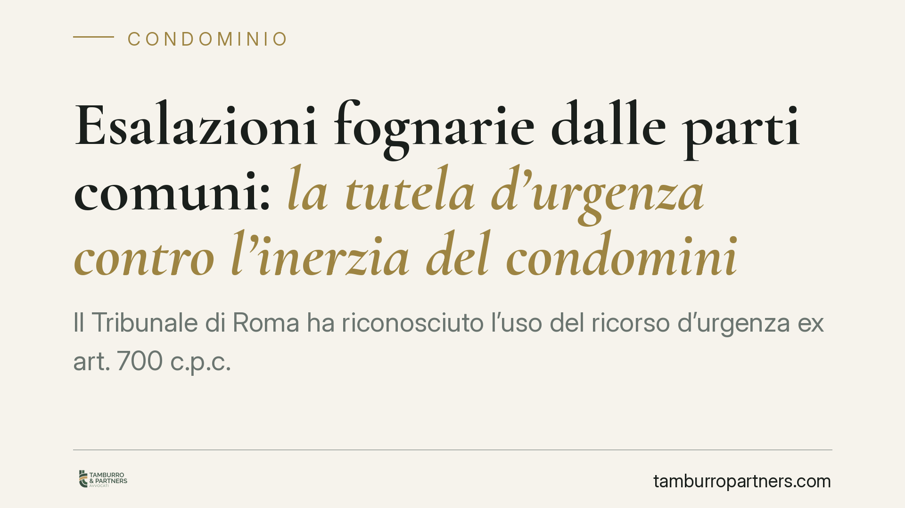

Esalazioni fognarie dalle parti comuni: la tutela d'urgenza contro l'inerzia del condominio
Il Tribunale di Roma ha riconosciuto l'uso del ricorso d'urgenza ex art. 700 c.p.c. contro le esalazioni fognarie provenienti da parti comuni, anche quando il danno si è già manifestato, purché continui. In più, ha previsto una penale giornaliera a carico del condominio per ogni giorno di ritardo nell'esecuzione dei lavori. Una decisione che sposta gli equilibri a favore del condòmino danneggiato dall'inerzia dell'amministrazione.

Il caso
Un condòmino subiva esalazioni maleodoranti provenienti dalle colonne fognarie condominiali. Nonostante le segnalazioni, il condominio non interveniva. Il danneggiato si è rivolto al giudice chiedendo un provvedimento d'urgenza. Il Tribunale di Roma ha accolto la domanda, ordinando i lavori di ripristino e fissando una penale per ogni giorno di ritardo.
La pronuncia interessa perché affronta un problema molto diffuso: cosa può fare chi convive con esalazioni insopportabili quando l'amministrazione resta ferma.
Inquadramento normativo
Le fognature che servono l'intero edificio rientrano, salvo titolo contrario, tra le parti comuni ai sensi dell'art. 1117 c.c.. La loro manutenzione compete quindi al condominio.
Le esalazioni che superano la normale tollerabilità costituiscono immissioni vietate dall'art. 844 c.c.: la norma consente al danneggiato di reagire quando il disturbo eccede ciò che è ragionevolmente sopportabile, tenuto conto della condizione dei luoghi.
Sul piano della responsabilità, il condominio risponde come custode delle parti comuni ai sensi dell'art. 2051 c.c.: si tratta di una responsabilità che prescinde dalla colpa e si fonda sul semplice rapporto di custodia con la cosa che ha prodotto il danno.
Il cuore processuale della vicenda è l'art. 700 c.p.c., che consente di ottenere un provvedimento d'urgenza quando un diritto rischia un pregiudizio imminente e irreparabile nel tempo necessario a un giudizio ordinario. Il Tribunale ha chiarito un punto spesso frainteso: l'urgenza non viene meno solo perché il danno si è già verificato. Se il disturbo è continuativo, il pregiudizio si rinnova ogni giorno e giustifica l'intervento cautelare.
Infine, la penale giornaliera — tecnicamente *astreinte* — trova fondamento nell'art. 614-bis c.p.c.: il giudice può fissare una somma di denaro dovuta per ogni giorno di ritardo nell'adempimento di un obbligo di fare, così da rendere concretamente coercibile l'ordine.
Implicazioni pratiche
Per il condòmino danneggiato, la decisione offre uno strumento rapido. Non è più necessario attendere i tempi lunghi di una causa ordinaria per fermare le esalazioni: dimostrata la continuità del disturbo e la provenienza dalle parti comuni, il provvedimento d'urgenza impone al condominio di intervenire subito.
La penale giornaliera aggiunge pressione effettiva. Il condominio che tarda i lavori accumula un debito che cresce ogni giorno, con un effetto deterrente diretto sull'inerzia dell'amministrazione.
Per l'amministratore, il messaggio è altrettanto chiaro. Rimandare gli interventi su guasti fognari segnalati espone il condominio a condanne che comprendono non solo i lavori, ma anche le somme accumulate per il ritardo e le spese di lite. L'inerzia diventa più costosa dell'intervento tempestivo.
Resta centrale la prova. Il ricorso regge se il danneggiato documenta la natura e la continuità delle esalazioni. In questi casi assumono rilievo la relazione dell'ASL, eventuali accertamenti tecnici e, in sede giudiziale, la nomina di un CTU (consulente tecnico d'ufficio) che verifichi causa e origine del problema.
Cosa fare in concreto
- Segnalate per iscritto all'amministratore il problema, con data certa (raccomandata o PEC), descrivendo le esalazioni e chiedendo l'intervento entro un termine.
- Documentate il disturbo: annotate frequenza e intensità, raccogliete testimonianze e, dove possibile, richiedete un sopralluogo dell'ASL che attesti la situazione igienico-sanitaria.
- Conservate ogni riscontro sull'inerzia del condominio: mancate risposte, verbali assembleari che rinviano i lavori, preventivi non deliberati.
- Valutate il ricorso d'urgenza ex art. 700 c.p.c. quando il disturbo è continuativo e l'amministrazione resta ferma, chiedendo contestualmente la penale giornaliera ex art. 614-bis c.p.c.
- Fatevi assistere per tempo: la tenuta del ricorso dipende dalla qualità della documentazione raccolta nella fase precedente.
La combinazione tra tutela cautelare e penale per il ritardo rende oggi più difficile, per il condominio, trincerarsi dietro i tempi lunghi. Chi convive con un problema fognario non risolto dispone di un percorso concreto per imporre l'intervento.
---
*Contributo informativo a cura di Tamburro & Partners - Avv. Giuseppe Tamburro. Non costituisce parere legale.*
Ogni condominio ha una storia a sé.
Se gestisci un'amministrazione e vuoi un confronto su una specifica questione condominiale, scrivi allo studio. Ti rispondiamo entro un giorno lavorativo.